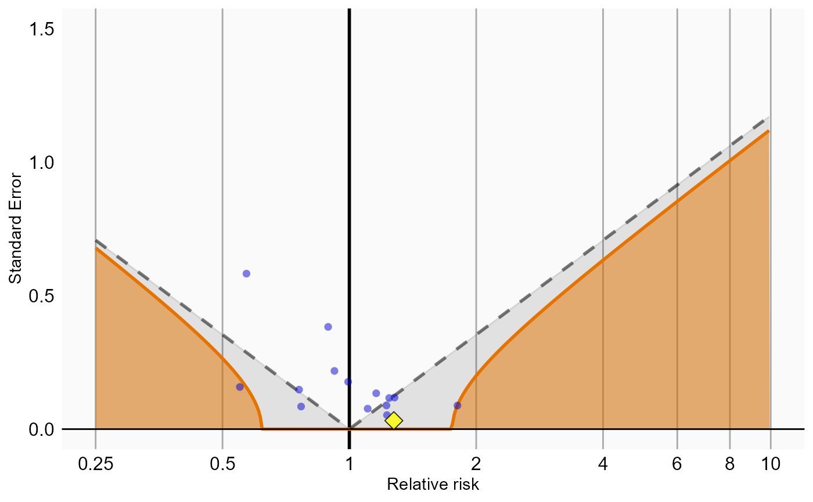

Running multiple analyses at once using the SelfControlledCaseSeries package
Martijn J. Schuemie
2025-06-10
Source:vignettes/MultipleAnalyses.Rmd
MultipleAnalyses.RmdIntroduction
In this vignette we focus on running several different analyses on several exposure-outcome pairs This can be useful when we want to explore the sensitivity to analyses choices, include controls, or run an experiment similar to the OMOP experiment to empirically identify the optimal analysis choices for a particular research question.
This vignette assumes you are already familiar with the
SelfControlledCaseSeries package and are able to perform
single studies. We will walk through all the steps needed to perform an
exemplar set of analyses, and we have selected the well-studied topic of
the effect of nonsteroidal anti-inflammatory drugs (NSAIDs) on
gastrointestinal (GI) bleeding-related hospitalization. For simplicity,
we focus on one NSAID: diclofenac. We will execute various variations of
an analysis for the primary exposure pair and a large set of negative
control exposures.
General approach
The general approach to running a set of analyses is that you specify all the function arguments of the functions you would normally call, and create sets of these function arguments. The final outcome models as well as intermediate data objects will all be saved to disk for later extraction.
An analysis will be executed by calling these functions in sequence:
When you provide several analyses to the
SelfControlledCaseSeries package, it will determine whether
any of the analyses and exposure-outcome pairs have anything in common,
and will take advantage of this fact. For example, if we specify several
exposure-outcome pairs with the same outcome, the data for the outcome
will be extracted only once.
The function arguments you need to define have been divided into four groups:
- Exposures-outcome sets: arguments that are specific to a hypothesis of interest, in the case of the self-controlled case series this is a combination of one or more exposures and an outcome.
- Analyses: arguments that are not directly specific to a hypothesis of interest, such as the washout window, whether to adjust for age and seasonality, etc.
- Arguments that are the output of a previous function in the
SelfControlledCaseSeriespackage, such as theSccsIntervalDataargument of thecreateSccsIntervalDatafunction. These cannot be specified by the user. - Arguments that are specific to an environment, such as the connection details for connecting to the server, and the name of the schema holding the CDM data.
Arguments in groups 1 and 2 together fully specify the analyses, and sharing these with other sites would allow them to fully reproduce the study. Together, they are therefore referred to as the ‘SCCS analysis specifications’.
Preparation for the example
We need to tell R how to connect to the server where the data are.
SelfControlledCaseSeries uses the
DatabaseConnector package, which provides the
createConnectionDetails function. Type
?createConnectionDetails for the specific settings required
for the various database management systems (DBMS). For example, one
might connect to a PostgreSQL database using this code:
connectionDetails <- createConnectionDetails(
dbms = "postgresql",
server = "localhost/ohdsi",
user = "joe",
password = "supersecret"
)
outputFolder <- "s:/temp/sccsVignette2"
cdmDatabaseSchema <- "my_cdm_data"
cohortDatabaseSchema <- "my_cohorts"
options(sqlRenderTempEmulationSchema = NULL)The last three lines define the cdmDatabaseSchema and
cohortDatabaseSchema variables, as well as the CDM version.
We’ll use these later to tell R where the data in CDM format live, where
we want to store the (outcome) cohorts, and what version CDM is used.
Note that for Microsoft SQL Server, databaseschemas need to specify both
the database and the schema, so for example
cdmDatabaseSchema <- "my_cdm_data.dbo".
We also need to prepare our exposures and outcomes of interest. The
drug_era table in the OMOP Common Data Model already contains
pre-specified cohorts of users at the ingredient level, so we will use
that for the exposures. For the outcome we can use the OHDSI
PhenotypeLibrary to retrieve a community-approved
definition of GI bleeding:
giBleed <- 77
cohortDefinitionSet <- PhenotypeLibrary::getPlCohortDefinitionSet(giBleed)We can use the CohortGenerator package to instantiate
this cohort:
connection <- DatabaseConnector::connect(connectionDetails)
cohortTableNames <- CohortGenerator::getCohortTableNames(cohortTable)
CohortGenerator::createCohortTables(connection = connection,
cohortDatabaseSchema = cohortDatabaseSchema,
cohortTableNames = cohortTableNames)
counts <- CohortGenerator::generateCohortSet(connection = connection,
cdmDatabaseSchema = cdmDatabaseSchema,
cohortDatabaseSchema = cohortDatabaseSchema,
cohortTableNames = cohortTableNames,
cohortDefinitionSet = cohortDefinitionSet)
DatabaseConnector::disconnect(connection)Specifying exposures-outcome sets
The first group of arguments define the exposures and outcome. Here we demonstrate how to create an exposures-outcome set:
diclofenac <- 1124300
negativeControls <- c(
705178, 705944, 710650, 714785, 719174, 719311, 735340, 742185,
780369, 781182, 924724, 990760, 1110942, 1111706, 1136601,
1317967, 1501309, 1505346, 1551673, 1560278, 1584910, 19010309,
40163731
)
giBleed <- 77
exposuresOutcomeList <- list()
exposuresOutcomeList[[1]] <- createExposuresOutcome(
outcomeId = giBleed,
exposures = list(createExposure(exposureId = diclofenac))
)
for (exposureId in c(negativeControls)) {
exposuresOutcome <- createExposuresOutcome(
outcomeId = giBleed,
exposures = list(createExposure(exposureId = exposureId, trueEffectSize = 1))
)
exposuresOutcomeList[[length(exposuresOutcomeList) + 1]] <- exposuresOutcome
}We defined the outcome of interest to be the cohort with the ID
stored in giBleed. The exposures include diclofenac
(concept ID 1124300) and a large number of negative control exposures.
Note that for the negative controls we specify
trueEffectSize = 1 since we assume negative controls have
no causal effect on the outcome.
A convenient way to save exposuresOutcomeList to file is
by using the saveExposuresOutcomeList function, and we can
load it again using the loadExposuresOutcomeList
function.
Specifying analyses
The second group of arguments are not specific to a hypothesis of
interest, and comprise the majority of arguments. For each function that
will be called during the execution of the analyses there is a companion
function that creates the core settings for that function. For example,
for the fitSccsModel() function there is the
createFitSccsModelArgs() function. These companion
functions can be used to create the arguments to be used during
execution:
getDbSccsDataArgs <- createGetDbSccsDataArgs(
deleteCovariatesSmallCount = 100,
exposureIds = c(),
maxCasesPerOutcome = 100000
)
createStudyPopulationArgs <- createCreateStudyPopulationArgs(
naivePeriod = 180,
firstOutcomeOnly = FALSE
)
covarExposureOfInt <- createEraCovariateSettings(
label = "Exposure of interest",
includeEraIds = "exposureId",
start = 1,
end = 0,
endAnchor = "era end",
profileLikelihood = TRUE,
exposureOfInterest = TRUE
)
createSccsIntervalDataArgs1 <- createCreateSccsIntervalDataArgs(
eraCovariateSettings = covarExposureOfInt
)
fitSccsModelArgs <- createFitSccsModelArgs()Any argument that is not explicitly specified by the user will assume
the default value specified in the companion function. Note that for
several arguments for concept or cohort definition IDs we can use the
exposureIdRef (default = "exposureId") in the
Exposure objects that we used in
createExposuresOutcome(). In this case, we defined the
argument includeEraIds to get the value of the
exposureId variable, meaning it will take the value of the
diclofenac concept ID, or any of the negative control IDs. Also note
that we set exposureOfInterest = TRUE, which will cause the
estimate for this covariate to be included in the result summary later
on.
Important: at least one era covariate in your analysis must
have exposureOfInterest = TRUE.
We can now combine the arguments for the various functions into a single analysis:
sccsAnalysis1 <- createSccsAnalysis(
analysisId = 1,
description = "Simplest model",
getDbSccsDataArgs = getDbSccsDataArgs,
createStudyPopulationArgs = createStudyPopulationArgs,
createIntervalDataArgs = createSccsIntervalDataArgs1,
fitSccsModelArgs = fitSccsModelArgs
)Note that we have assigned an analysis ID (1) to this set of arguments. We can use this later to link the results back to this specific set of choices. We also include a short description of the analysis.
We can easily create more analyses, for example by including adjustments for age and seasonality, or for including other drugs in the model:
ppis <- c(911735, 929887, 923645, 904453, 948078, 19039926)
covarPreExp <- createEraCovariateSettings(
label = "Pre-exposure",
includeEraIds = "exposureId",
start = -30,
end = -1,
endAnchor = "era start",
preExposure = TRUE
)
covarProphylactics <- createEraCovariateSettings(
label = "Prophylactics",
includeEraIds = ppis,
start = 1,
end = 0,
endAnchor = "era end"
)
createSccsIntervalDataArgs2 <- createCreateSccsIntervalDataArgs(
eraCovariateSettings = list(
covarExposureOfInt,
covarPreExp,
covarProphylactics
)
)
sccsAnalysis2 <- createSccsAnalysis(
analysisId = 2,
description = "Including prophylactics and pre-exposure",
getDbSccsDataArgs = getDbSccsDataArgs,
createStudyPopulationArgs = createStudyPopulationArgs,
createIntervalDataArgs = createSccsIntervalDataArgs2,
fitSccsModelArgs = fitSccsModelArgs
)
seasonalitySettings <- createSeasonalityCovariateSettings(seasonKnots = 5)
calendarTimeSettings <- createCalendarTimeCovariateSettings(calendarTimeKnots = 5)
createSccsIntervalDataArgs3 <- createCreateSccsIntervalDataArgs(
eraCovariateSettings = list(
covarExposureOfInt,
covarPreExp,
covarProphylactics
),
seasonalityCovariateSettings = seasonalitySettings,
calendarTimeCovariateSettings = calendarTimeSettings
)
sccsAnalysis3 <- createSccsAnalysis(
analysisId = 3,
description = "Including prophylactics, season, calendar time, and pre-exposure",
getDbSccsDataArgs = getDbSccsDataArgs,
createStudyPopulationArgs = createStudyPopulationArgs,
createIntervalDataArgs = createSccsIntervalDataArgs3,
fitSccsModelArgs = fitSccsModelArgs
)
covarAllDrugs <- createEraCovariateSettings(
label = "Other exposures",
includeEraIds = c(),
excludeEraIds = "exposureId",
stratifyById = TRUE,
start = 1,
end = 0,
endAnchor = "era end",
allowRegularization = TRUE
)
createSccsIntervalDataArgs4 <- createCreateSccsIntervalDataArgs(
eraCovariateSettings = list(
covarExposureOfInt,
covarPreExp,
covarAllDrugs
),
seasonalityCovariateSettings = seasonalitySettings,
calendarTimeCovariateSettings = calendarTimeSettings
)
sccsAnalysis4 <- createSccsAnalysis(
analysisId = 4,
description = "Including all other drugs",
getDbSccsDataArgs = getDbSccsDataArgs,
createStudyPopulationArgs = createStudyPopulationArgs,
createIntervalDataArgs = createSccsIntervalDataArgs4,
fitSccsModelArgs = fitSccsModelArgs
)
createSccsIntervalDataArgs5 <- createCreateSccsIntervalDataArgs(
eraCovariateSettings = list(
covarExposureOfInt,
covarPreExp,
covarProphylactics
),
eventDependentObservation = TRUE
)
sccsAnalysis5 <- createSccsAnalysis(
analysisId = 5,
description = "Adjusting for event-dependent obs. end",
getDbSccsDataArgs = getDbSccsDataArgs,
createStudyPopulationArgs = createStudyPopulationArgs,
createIntervalDataArgs = createSccsIntervalDataArgs5,
fitSccsModelArgs = fitSccsModelArgs
)These analyses can be combined in a list:
sccsAnalysisList <- list(
sccsAnalysis1,
sccsAnalysis2,
sccsAnalysis3,
sccsAnalysis4,
sccsAnalysis5
)A convenient way to save sccsAnalysisList to file is by
using the saveSccsAnalysisList function, and we can load it
again using the loadSccsAnalysisList function.
We combine the exposures-outcomes and analysis lists into the full
sccsAnalysisSpecifications:
sccsAnalysesSpecifications <- createSccsAnalysesSpecifications(
sccsAnalysisList = sccsAnalysisList,
exposuresOutcomeList = exposuresOutcomeList,
controlType = "exposure"
)This specifies we will run all analyses against all hypotheses of
interest, meaning that the total number of outcome models is
length(sccsAnalysisList) * length(exposuresOutcomeList).
(If we want, we can skip some of these combinations using the
analysesToExclude argument of
createSccsAnalysesSpecifications().)
Executing multiple analyses
We can now run the specified analyses using the
runSccsAnalyses() function:
multiThreadingSettings <- createDefaultSccsMultiThreadingSettings(
parallel::detectCores() - 1
)
referenceTable <- runSccsAnalyses(
connectionDetails = connectionDetails,
cdmDatabaseSchema = cdmDatabaseSchema,
exposureDatabaseSchema = cdmDatabaseSchema,
exposureTable = "drug_era",
outcomeDatabaseSchema = cohortDatabaseSchema,
outcomeTable = cohortTable,
outputFolder = outputFolder,
sccsMultiThreadingSettings = multiThreadingSettings,
sccsAnalysesSpecifications = sccsAnalysesSpecifications
)In the code above, we first specify how many parallel threads
SelfControlledCaseSeries can use. Many of the computations
can be computed in parallel, and providing more than one CPU core can
greatly speed up the computation. Here we specify
SelfControlledCaseSeries can use all but one of the CPU
cores detected in the system (using the
parallel::detectCores() function).
We call runSccsAnalyses, providing the arguments for
connecting to the database, which schemas and tables to use, as well as
the analyses and hypotheses of interest. The outputFolder
specifies where the outcome models and intermediate files will be
written. Because in this example we use negative control exposures, we
must explicitly specify controlType = "exposure". This will
cause the different negative control exposure-outcome pairs to be used
for the same outcome.
Restarting
If for some reason the execution was interrupted, you can restart by
re-issuing the runSccsAnalyses() command. Any intermediate
and final products that have already been completed and written to disk
will be skipped.
Retrieving the results
The result of the runSccsAnalyses() is a data frame with
one row per exposures-outcome-analysis combination, so one row per
fitted SCCS model. It provides the file names of the intermediate and
end-result files that were constructed. For example, we can retrieve the
fitted model for the combination of our drug of interest, outcome, and
first analysis:
sccsModelFile <- referenceTable$sccsModelFile[result$exposureId == diclofenac &
referenceTable$outcomeId == giBleed &
referenceTable$analysisId == 1]
sccsModel <- readRDS(file.path(outputFolder, sccsModelFile))
sccsModel## SccsModel object
##
## Outcome ID: 77
##
## Outcome count:
## outcomeSubjects outcomeEvents outcomeObsPeriods observedDays
## 77 88644 162059 88874 187523199
##
## Estimates:
## # A tibble: 2 × 7
## Name ID Estimate LB95CI UB95CI LogRr SeLogRr
## <chr> <dbl> <dbl> <dbl> <dbl> <dbl> <dbl>
## 1 End of observation period 99 2.14 2.09 2.19 0.760 0.0112
## 2 Exposure of interest 1000 1.22 1.15 1.30 0.200 0.0317Note that some of the file names will appear several times in the
table. In our example all analysis share the same sccsData
object.
We can always retrieve the file reference table again using the
getFileReference() function:
referenceTable <- getFileReference(outputFolder)We can get a summary of the results using
getResultsSummary():
resultsSum <- getResultsSummary(outputFolder)
head(resultsSum)## # A tibble: 6 × 32
## exposuresOutcomeSetId nestingCohortId outcomeId analysisId covariateAnalysisId
## <dbl> <dbl> <dbl> <int> <dbl>
## 1 1480556481 NA 77 1 1
## 2 1039014262 NA 77 1 1
## 3 -1616427546 NA 77 1 1
## 4 -1774200863 NA 77 1 1
## 5 -612981155 NA 77 1 1
## 6 -1166912124 NA 77 1 1
## # ℹ 27 more variables: covariateId <dbl>, covariateName <chr>, eraId <dbl>,
## # trueEffectSize <int>, outcomeSubjects <dbl>, outcomeEvents <dbl>,
## # outcomeObservationPeriods <dbl>, observedDays <dbl>,
## # covariateSubjects <dbl>, covariateDays <dbl>, covariateEras <dbl>,
## # covariateOutcomes <dbl>, rr <dbl>, ci95Lb <dbl>, ci95Ub <dbl>, p <dbl>,
## # oneSidedP <dbl>, logRr <dbl>, seLogRr <dbl>, llr <dbl>, calibratedRr <dbl>,
## # calibratedCi95Lb <dbl>, calibratedCi95Ub <dbl>, calibratedP <dbl>, …This tells us, per exposure-outcome-analysis combination (so possible
multiple rows per SCCS model) the estimated relative risk and 95%
confidence interval, as well as the number of subjects (cases) and the
number of events observed for those subjects. The only covariates
included in this summary are those we marked with
exposureOfInterest = TRUE when calling
createEraCovariateSettings() earlier.
Diagnostics summary
The runSccsAnalyses() function automatically executes
diagnostics for the major assumptions of the SCCS design. You can view a
summary of the diagnostics results:
diagnosticsSum <- getDiagnosticsSummary(outputFolder)
head(diagnosticsSum)## # A tibble: 6 × 24
## exposuresOutcomeSetId nestingCohortId outcomeId analysisId covariateAnalysisId
## <dbl> <dbl> <dbl> <int> <dbl>
## 1 1480556481 NA 77 1 1
## 2 1039014262 NA 77 1 1
## 3 -1616427546 NA 77 1 1
## 4 -1774200863 NA 77 1 1
## 5 -612981155 NA 77 1 1
## 6 -1166912124 NA 77 1 1
## # ℹ 19 more variables: covariateId <dbl>, covariateName <chr>, eraId <dbl>,
## # timeStabilityP <dbl>, timeStabilityDiagnostic <chr>, eventExposureLb <dbl>,
## # eventExposureUb <dbl>, eventExposureDiagnostic <chr>,
## # eventObservationLb <dbl>, eventObservationUb <dbl>,
## # eventObservationDiagnostic <chr>, rareOutcomePrevalence <dbl>,
## # rareOutcomeDiagnostic <chr>, mdrr <dbl>, mdrrDiagnostic <chr>, ease <dbl>,
## # easeDiagnostic <chr>, unblind <lgl>, unblindForEvidenceSynthesis <lgl>For each of the diagnostics, this summary reports whether an analysis
failed or passed the diagnostic. The thresholds used can be specified in
the createSccsAnalysesSpecifications() function.
Negative control distribution
Now that we have produced estimates for all outcomes including our negative controls, we can look at the distribution of negative controls. In each plot, the blue dots represent our negative control exposures, and the yellow diamond represents our exposure of interest: diclofenac. An unbiased, well-calibrated analysis should have 95% of the negative controls between the dashed lines (ie. 95% should have p > .05). Note that empirical calibration was already automatically performed, and calibrated confidence intervals and p-values are included separately in the analyses summary.
Before viewing the estimates, we should remove those that fail one of our diagnostics. For the first analysis, that means none of the estimates remain:
install.packages("EmpiricalCalibration")
library(EmpiricalCalibration)
# Analysis 1: Simplest model
analysis1Estimates <- resultsSum |>
inner_join(diagnosticsSum) |>
filter(analysisId == 1 & unblind == 1)
nrow(analysis1Estimates)## [1] 0The same is true for analysis 2:
# Analysis 2: Including prophylactics and pre-exposure
analysis2Estimates <- resultsSum |>
inner_join(diagnosticsSum) |>
filter(analysisId == 2 & unblind == 1)
nrow(analysis2Estimates)
)## [1] 0Only when we start to include corrections for season and calendar time do we pass diagnostics:
# Analysis 3: Including prophylactics, season, calendar time, and pre-exposure
analysis3Estimates <- resultsSum |>
inner_join(diagnosticsSum) |>
filter(analysisId == 3 & unblind == 1)
negCons <- analysis3Estimates |>
filter(eraId != diclofenac)
ei <- negCons <- analysis3Estimates |>
filter(eraId == diclofenac)
plotCalibrationEffect(
logRrNegatives = negCons$logRr,
seLogRrNegatives = negCons$seLogRr,
logRrPositives = ei$logRr,
seLogRrPositives = ei$seLogRr
)
# Analysis 4: Including all other drugs
negCons <- resultsSum[resultsSum$analysisId == 4 & resultsSum$eraId != diclofenac, ]
ei <- resultsSum[resultsSum$analysisId == 4 & resultsSum$eraId == diclofenac, ]
null <- fitNull(
negCons$logRr,
negCons$seLogRr
)
plotCalibrationEffect(
logRrNegatives = negCons$logRr,
seLogRrNegatives = negCons$seLogRr,
logRrPositives = ei$logRr,
seLogRrPositives = ei$seLogRr,
null
)When using the adjustment for event-dependent observation end we do not pass diagnostics for any exposure-outcome pair:
# Analysis 5: Adjusting for event-dependent obs. end
nrow(analysis5Estimates)## [1] 0Acknowledgments
Considerable work has been dedicated to provide the
SelfControlledCaseSeries package.
citation("SelfControlledCaseSeries")## To cite package 'SelfControlledCaseSeries' in publications use:
##
## Schuemie M, Ryan P, Shaddox T, Suchard M (2025).
## _SelfControlledCaseSeries: Self-Controlled Case Series_. R package
## version 6.0.0, https://github.com/OHDSI/SelfControlledCaseSeries,
## <https://ohdsi.github.io/SelfControlledCaseSeries/>.
##
## A BibTeX entry for LaTeX users is
##
## @Manual{,
## title = {SelfControlledCaseSeries: Self-Controlled Case Series},
## author = {Martijn Schuemie and Patrick Ryan and Trevor Shaddox and Marc Suchard},
## year = {2025},
## note = {R package version 6.0.0,
## https://github.com/OHDSI/SelfControlledCaseSeries},
## url = {https://ohdsi.github.io/SelfControlledCaseSeries/},
## }Further, SelfControlledCaseSeries makes extensive use of
the Cyclops package.
citation("Cyclops")## To cite Cyclops in publications use:
##
## Suchard MA, Simpson SE, Zorych I, Ryan P, Madigan D (2013). "Massive
## parallelization of serial inference algorithms for complex
## generalized linear models." _ACM Transactions on Modeling and
## Computer Simulation_, *23*, 10. doi:10.1145/2414416.2414791
## <https://doi.org/10.1145/2414416.2414791>.
##
## A BibTeX entry for LaTeX users is
##
## @Article{,
## author = {M. A. Suchard and S. E. Simpson and I. Zorych and P. Ryan and D. Madigan},
## title = {Massive parallelization of serial inference algorithms for complex generalized linear models},
## journal = {ACM Transactions on Modeling and Computer Simulation},
## volume = {23},
## pages = {10},
## year = {2013},
## doi = {10.1145/2414416.2414791},
## }This work is supported in part through the National Science Foundation grant IIS 1251151.